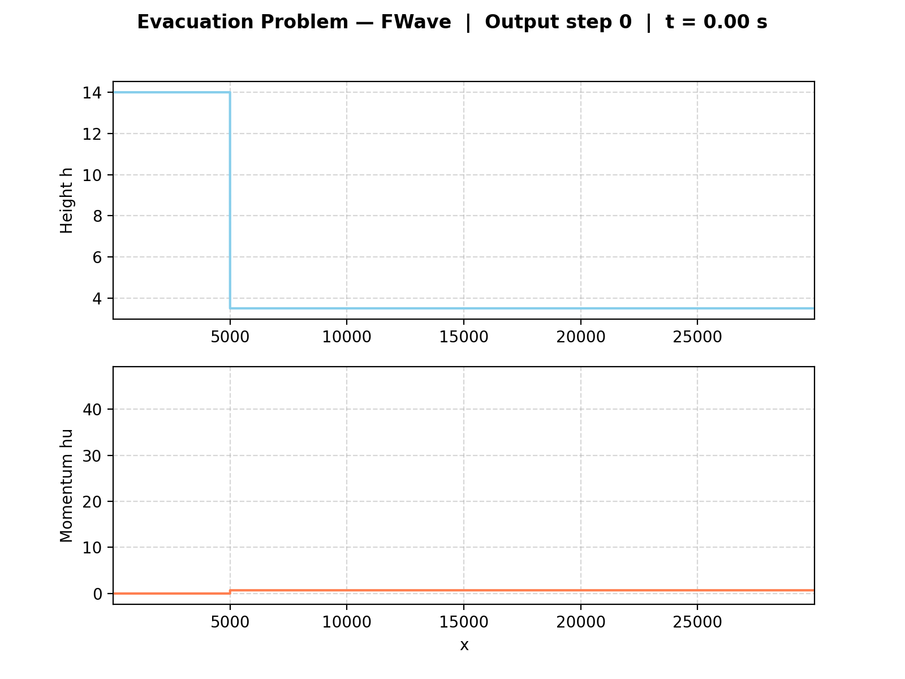

2. Finite Volume Discretization
Implementation
The one-dimensional finite volume discretization is realized in
WavePropagation1d, which manages cell quantities, ghost cells, and
the time-step update. The solver can be switched between Roe and
f-wave at runtime.
DamBreak1d supports independently configurable heights and momenta
on both sides, covering both the classical dam break and the 2.2.2
evacuation scenario. ShockShock1d and RareRare1d are symmetric
Riemann setups with antisymmetric momentum. All setups use the
convention \(x \leq x_{\text{dis}}\) for the left state.
The CLI in main.cpp selects a setup via -p; domain size and
end time are set via -d and -t. CSV snapshots are written at
every 0.5% of total time steps, each annotated with a
# sim_time=... header.
The Middle State Sanity Check is implementes as a dedicated Catch2 test case ([MiddleStates]).
Unit Tests
Each setup has its own test file ([DamBreak1d],
[ShockShock1d], [RareRare1d]) covering constant heights,
momentum signs, antisymmetry, left-state assignment of the
discontinuity cell, zero y-momentum, and time-independence of the
initial state.
[MiddleStates] reads middle_states.csv, runs the f-wave solver on each listed Riemann problem, and compares the computed middle state height \(h^*\) against the reference within a relative tolerance of \(10^{-3}\).
The solver passes across the full data set.
Results & Visualizations
Rare-Rare problem (2.1)
Observations
As the graphics below show, we were able to observe that changing the momentum doesn’t affect the speed of the wave. On the other hand, changing the height does have an effect on the speed. These observations match the expectations, since mathematically the momentum gets canceled out, while the height directly influences the wave speed through the gravitational term.:
1. Different initial heights:
{kind=link}
{kind=link}
2. Different initial momenta:
{kind=link}
{kind=link}
Shock-Shock problem (2.1)
Observations
Here we were able to observe the same effects as in the rare-rare problem, which is expected since the shock-shock and rare-rare problems are symmetric counterparts with respect to the momentum. Again, changing the momentum does not affect the wave speed, while changing the height does, due to its influence on the gravitational term in the wave speed calculation.
1. Different initial heights:
{kind=link}
{kind=link}
2. Different initial momenta:
{kind=link}
{kind=link}
Dam-Break (2.2.1)
Setup
The dam-break solver is applied with varying initial water heights \(h_l\) and \(h_r\) while keeping the initial momenta at zero (\(hu_l = hu_r = 0\)). The dam is placed at the center of the domain.
Observations
{kind=link}
{kind=link}
As the ratio \(h_l / h_r\) increases, two effects become clearly visible. First, the shock wave propagating to the right accelerates — the higher the left water column, the faster the shock front travels. Second, the rarefaction wave on the left side widens and the water height drops more steeply behind it. This is consistent with the Roe eigenvalue \(\lambda_r^{Roe} = u^{Roe} + \sqrt{g h^{Roe}}\), where a larger \(h^{Roe}\) directly increases the shock speed.
Impact of \(u_r\)
The initial particle velocity \(u_r\) in the river has a comparatively small impact on the overall wave structure. Since \(u_r\) enters the Roe average only as a weighted contribution,
its influence on \(\lambda_r^{Roe}\) is small compared to the gravitational term \(\sqrt{g h^{Roe}}\), which is dominated by the water heights. For the tested configurations, the shock speed and wave structure are therefore primarily determined by the ratio \(h_l / h_r\).
Village Evacuation Time (2.2.2)
Setup:
Dam at \(x=5000m\), village at \(x=30000m\), \(s_{village} = 25000m\). Initial state: \(h_l = 14m\), \(h_r = 3.5m\), \(hu_l = 0\), \(hu_r = 0.7 m^2/s\). Evacuation time is estimated via the speed of the right-going wave.
Theoretical Estimate:
Simulation:
Setup: ./build/tsunami_lab -n 30000 -d 30000 -t 2400 -p DamBreak 14 3.5 5000 0 0.7.
The shock front reaches the village (\(x=30000\)) at
\(t \approx 2256 s (\sim 37.6 min)\).
{kind=link}

Results:
The analytical estimate yields \(\sim 44.66 min\), while the simulation shows the shock arriving \(\sim 7 min\) earlier at \(\sim 37.6 min\). This is expected, as \(\lambda_r^{Roe}\) underestimates the true shock speed because the shock propagates through water already set in motion by the dam break.
Individual Contributions
Yannik Köllmann: Implementation of 2.1.1 setups
ShockShock1dandRareRare1d([ShockShock1d],[RareRare1d]) with corresponding unit tests, copied from theDamBreak1dtemplate and adapted for shock-shock and rare-rare Riemann problems. Extension ofDamBreak1dwith configurable left and right momentum parameters (m_momentumLeft,m_momentumRight) to enable setups such as the 2.2.2 evacuation scenario with a pre-existing river flow. Added corresponding unit tests and updated the command-line interface inmain.cppto accept optionalhuLeft/huRightarguments. Integrated the new setup files into the SCons build configuration.Jan Vogt: Implementation of the middle-state sanity check against
middle_states.csvas a Catch2 test case ([MiddleStates]), verifying the computed middle state height \(h^*\) within the chosen tolerance. Generation of the GIF visualizations for the dam-break, shock-shock, rare-rare, and evacuation-problem simulations. Writing of this chapter’s documentation, including the parameter-study observations.Mika Brückner: Integration of f-wave solver into
WavePropagation1d.h,WavePropagation1d.cppandWavePropagation1d.test.cpp([WaveProp1dFWave]) for task 2.1. Implementation of commandline arguments inmain.cpp. Implementation ofvisualize_simulation.pyscript for visualizing simulation results frommain.cpp. Simulation, visualization and calculation of evacuation time for the 2.2.2 scenario with f-wave solver. Generation of the GIF visualizations for the dam-break, shock-shock, rare-rare, and evacuation-problem simulations. Parameter-study observations for tasks 2.1.2 and 2.2.1.